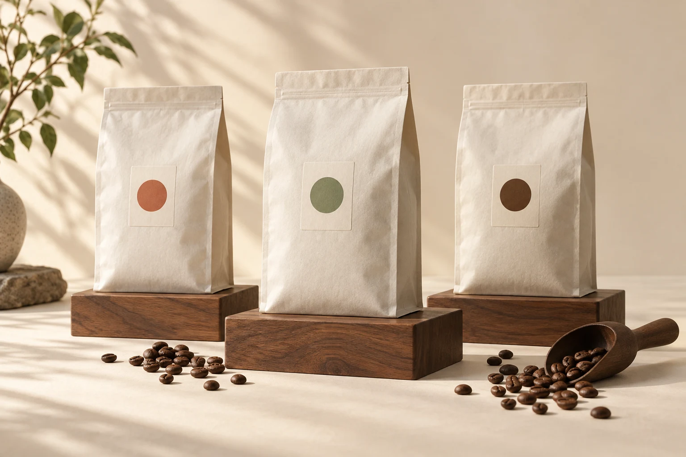
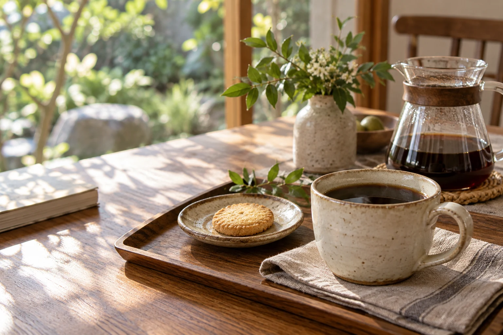

01 / LIGHT朝のはじまりに
あさの光
軽やかな飲み口をイメージした、浅めの焙煎の構成例。
苦み ●○○酸味 ●●○
¥1,200 税込 / 200g・仮価格

写真はAIによるイメージですHELLO, COFFEE TIME.
産地や焙煎の名前が分からなくても。
すっきり飲みたい日、ミルクを合わせたい日。
いつもの時間に合う味わいから、選んでみませんか。
FIND YOUR EVERYDAY.
味わいで絞り込めます

01 / LIGHT朝のはじまりに
軽やかな飲み口をイメージした、浅めの焙煎の構成例。
¥1,200 税込 / 200g・仮価格
おやつの時間に
ほっとする、まろやかな味わいをイメージした構成例。
¥1,300 税込 / 200g・仮価格
ミルクとゆっくり
ミルクに合う、しっかりした味わいをイメージした構成例。
¥1,400 税込 / 200g・仮価格
商品名・価格・味わい・内容量は提案用の仮設定です。実在商品の販売情報ではありません。商品画像は共通のAIイメージです。
OUR LITTLE RITUAL.
豆を選ぶ時間から、最後のひと口まで。
毎日の珈琲が、小さな楽しみになりますように。
このページは、自家焙煎の魅力を暮らしの場面と結びつける提案です。本番では、お店の焙煎方針・豆の特徴・実際の写真でお伝えします。
BEANS OR GROUND?
淹れる前に挽く時間も楽しみたい方へ。商品選択で「豆のまま」を選べます。
いつものドリッパーで楽しみたい方へ。「粉」を選んで内容を確認できます。
挽き目・対応器具の詳しい案内は、本番の商品仕様に合わせて調整します。
SHOPPING GUIDE
本番では送料表、発送の目安、配送方法をここに掲載し、カートでも確認できるようにします。このデモでは配送・注文受付は行いません。
商品を選んだ後に「豆のまま」「粉」を選択できます。デモの選択内容はカート体験に反映されます。
ギフト対応の有無、包装、同梱物は店舗の運用確認後に掲載する想定です。デモではギフトサービスを提供していません。
ONE CUP, YOUR TIME.